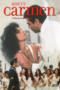
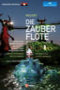

VÍDEOS DE ÓPERA
OPERA VIDEOS
OPERA VIDEOS
| Portada Cover |
Title Titulo |
Lugar Location |
Año Year |
Idioma Language |
Formato Format |
Resolución Resolution |
Cast Elenco |
Notes |
|---|---|---|---|---|---|---|---|---|
| Aïda | Arena di Verona | 2005 | IT | mp4 | 480p | Jose Cura, Micaela Carosi, Carlo Colombara, Tichina Vaughn, Alberto Mastromarino | ||
| Aïda | Teatro Colón,Buenos Aires | 2018 | IT | mp4 | 1080p | Latonia Moore, María Luján Mirabelli, Riccardo Massi, Mark Rucker, Roberto Scandiuzzi, Lucas Debevec Mayer, Raúl Iriarte, Marisú Pavón | ||
| Andrea Chénier | Teatro Colón,Buenos Aires | 2017 | IT | mp4 | 1080p | José Cura, Fabián Veloz, María Pía Piscitelli, Gaudalupe Barrientos, Emiliano Bulacios, Sergio Spina | ||
| La Boheme | MetropolitanOpera | 1982 | IT | mp4 | 720p | Teresa Stratas, Renata Scotto, José Carreras, Richard Stilwell, Allan Monk, James Morris, Italo Tajo, Dale Caldwell, Glenn Bater, James Brewer, James Levine, MET Orchestra | ||
| La bohème | San FranciscoOpera | 1988 | IT | mp4 | 576p | Luciano Pavarotti, Mirella Freni, Nicolai Ghiaurov, Gino Quilico, Italo Tajo, Sandra Pacetti | ||
| La bohème | Teatro Colón,Buenos Aires | 2017 | IT | mp4 | 1080p | Montserrat Maldonado, Nazareth Aufe, Ernesto Bauer, Maria Belen Rivarola, Luis Loaiza Isler, Walter Schwarz | ||
| La bohème | Teatro Colón,Buenos Aires | 2018 | IT | mp4 | 1080p | Mariana Ortiz, Attala Ayan, Fabián Veloz, Jaquelina Livieri, Carlos Esquivel, Fernando Grassi | ||
|  | Carmen | Earl's Court Arena | 1991 | FR | mp4 | 720p | Maria Ewing, Luis Lima, Leontina Vaduva, Gino Quilico, Judith Howarth, Jean Rigby, Francis Egerton | |
| Carmen | Film Version | 1984 | FR | mp4 | 480p | Julia Migenes, Plácido Domingo, Ruggero Raimondi, Faith Esham, Lillian Watson, Susan Daniel, John-Paul Bogart, Jean-Philippe Lafont, Gérard Garino, François Le Roux, Julien Guiomar, Accursio Di Leo, Maria Campano, Cristina Hoyos, Juan Antonio Jiménez | ||
| Carmen | Juventus Lyrica, Buenos Aires | 2015 | FR | mp4 | 1080p | Florencia Machado, Nazareth Aufe, Juan Salvador Trupia, María Goso, Alberto Jáuregui Lorda, Sebastián Sorarrain, Santiago Martínez, Ana Sofía Romagnoli, Verónica Canaves | ||
| Les contes d'Hoffmann | Teatro Colón,Buenos Aires | 2012 | FR | mp4 | 1080p | Ramón Vargas, Sophie Koch, Rubén Amoretti, Virginia Tola, Rachele Gilmore, Milijana Nikolic, Alejandro Spies, Emiliano Bulacios | ||
| Così fan tutte | Teatro Comunale di Ferrara | 2012 | IT | mp4 | 1080p | Melanie Diener, Anna Caterina Antonacci, Charles Workman, Nicola Ulivieri, Daniela Mazzucato Andrea Concetti | ||
| Don Giovanni | Aix en Provence | 2017 | IT | mp4 | 1080p | Philippe Sly, Nahuel di Pierro, Eleonora Buratto, Pavol Breslik, Isabel Leonard, Julie Fuchs, Krzysztof Baczyk, David Leigh | ||
 |
Don Pasquale | Teatro Colón,Buenos Aires | 2019 | IT | mp4 | 1080p | Nicola Ulivieri, Jaquelina Livieri, Santiago Ballerini, Darío Solari, Mario de Salvo | |
| El cóndor pasa | Lima | 2013 | IT | mp4 | 720p | Martina Potocarrero, Reynaldo Arenas, Percy Pinto Ávila, Jesus Flores, Alejandro Fuentes, Betty Alvarez | ||
| Faust | Gran Teatro Nacional Del Perú, Lima | 2012 | FR | mp4 | 1080p | Cesar Gutierrez, Hernán Iturralde, Svetla Krasteva, Josefina Brivio, Jorge Tello, Carlos Martinez, Bettina Victorero | ||
| La Forza del destino | Teatro comunale di Firenze | 2012 | IT | mp4 | 1080p | Violeta Urmana, Carlo Guelfi, Marcello Giordani, Julia Gertseva, Roberto Scandiuzzi, Bruno De Simone, Antonella Trevisan | ||
| Il trovatore | Royal Opera House, Covent Garden | 2012 | IT | mp4 | 1080p | Francesco Meli, Lianna Haroutounian, Željko Lučić, Ekaterina Semenchuk, Maurizio Muraro | ||
| Lucia di Lammermoor | Amarillo Opera | 2012 | IT | mp4 | 1080p | Hanan Alattar, David Pershall, Eric Barry, Nathan Granner, Noel Bouley | ||
| Macbeth | Gran Teatro del Liceu, Barcelona | 2016 | IT | mp4 | 1080p | Ludovico Tezier, Martina Serafin, Vitalij Kowaljow, Saimir Pirgu, Albert Casals, David Sanchez | ||
| Madama Butterfly | TV Broadcast | 1956 | IT | mp4 | 720p | Anna Moffo, Renato Cioni, Afro Poli, Miti Truccato Pace, Gino del Signore | ||
| Madama Butterfly | Film Version | 1974 | IT | mp4 | 480p | Mirella Freni, Plácido Domingo, Robert Kerns, Christa Ludwig, Michel Sénéchal, Marius Rintzler, Hans Helm, Elke Schary, Herbert von Karajan | ||
| Madama Butterfly | Arena di Verona | 1983 | IT | mp4 | 480p | Raina Kabaivanska, Lorenzo Saccomani, Nazzareno Antinori, Mario Ferrara | ||
| Madama Butterfly | Film Version | 1995 | IT | mp4 | 720p | Ying Huang, Richard Troxell, Ning Liang, Richard Cowan, Jing Ma Fan | ||
| Madama Butterfly | Kharkiv Opera & Ballet, Ukraine | 2016 | IT | mp4 | 1080p | Alla Mishakova, Alexey Srebnitsky, Natalya Matveeva, Evgeny Lissitzky | ||
| Madama Butterfly | Teatro alla Scala, Milan | 2016 | IT | mp4 | 1080p | Annalisa Stroppa, Maria José Siri, Nicole Brandolino, Bryan Hymel, Carlos Álvarez, Carlo Bosi, Costantino Finucci, Abramo Rosalen | ||
| Madama Butterfly | Pacific OperaProject | 2020 | JA, EN | mp4 | 1080p | Janet Szepei Todd, Peter James Lake, Kenneth Stavert, Kimberly Sogioka, Eiji Miura, Steve Moritsugu, Hisato Masuyama, Chelsea Obermeier | ||
| Manon Lescaut | Buenos Aires Lirica | 2016 | IT | mp4 | 720p | Macarena Valenzuela, Eric Herrero, Ernesto Bauer, Norberto Marcos, Iván Maier, Trinidad Goyeneche, Guadalupe Maiorino, Enzo Romano | ||
| The Marriageof Figaro | Royal Collegeof Music, London | 2012 | IT | mp4 | 1080p | Harry Thatcher, Josephine Goddard, Julieth Lozano, Adam Maxey, Lauren Joyanne Morris, Katy Thomson, Timothy Edlin, Joel Williams, Samuel Jenkins, Poppy Shotts, Conall O’Neill | ||
| Nabucco | Teatro Comunale di Bologna | 2013 | IT | mp4 | 1080p | Vladimir Stoyanov, Sergio Escobar, Dmitry Beloselskiy, Anna Pirozzi, Veronica Simeoni, Alessandro Guerzoni, Gianluca Floris, Elena Borin | ||
| Norma | Bolshoi Theatre, Moscow | 2012 | IT | mp4 | 480p | Montserrat Caballe, Bruna Baglioni, Gianni Raimondi, Ivo Vinco, Saverio Porzano, Rina Pallini | ||
| Norma | Teatro Colón,Buenos Aires | 2018 | IT | mp4 | 1080p | Anna Pirozzi, Héctor Sandoval, Annalisa Stroppa, Fernando Radó, Guadalupe Barrientos | ||
| Le Nozze di Figaro | Salzburg | 2015 | IT | mp4 | 1080p | Luca Pisaroni, Anett Fritsch, Martina Janková, Adam Plachetka, Margarita Gritskova, Ann Murray, Carlos Chausson, Paul Schweinester, Franz Supper | ||
| Otello | Teatro Real, Madrid | 2012 | IT | mp4 | 720p | Ermonela Jaho, Gregory Kunde, George Petean, Gemma Coma-Alabert, Alexey Dolgov, Vicenç Esteve, Fernando Radó, Isaac Galán | ||
| Rigoletto | Teatro Colón,Buenos Aires | 2019 | IT | mp4 | 720p | Fabián Veloz, Ekaterina Siurina, Pavel Valuzhin, Guadalupe Barrientos, Ricardo Seguel, George Andguladze, Alejandra Malvino, Christian Peregrino | ||
| Tosca | Stuttgart | 1961 | IT | mp4 | 480p | Renata Tebaldi, Eugene Tobin, George London, Gustav Grefe, Hubert Buchta, Heinz Cramer, Siegfried Fischer- Sandt, Wilhelm Baur | ||
| Tosca | Tokyo | 1961 | IT | mp4 | 480p | Renata Tebaldi, Gianni Poggi, Gian Giacomo Guelfi, Silvano Pagliuca, Antonio Pirino, Giorgio Onesti, Arturo La Porta | ||
| Tosca | Arena di Verona | 1984 | IT | mp4 | 480p | Eva Marton, Giacomo Aragall, Ingvar Wixell, Alfredo Giacomotti, Graziano Polidori | ||
| Tosca | TV broadcast | 1992 | IT | mp4 | 480pp | Plácido Domingo, Catherine Malfitano, Ruggero Raimondi, Zubin Mehta | ||
| Tosca | Buenos Aires Lirica | 2015 | IT | mp4 | 720p | Mónica Ferracani, Enrique Folger, Homero Pérez-Miranda, Christian Peregrino, Sergio Spina | ||
| La Traviata | Teatro Colón,Buenos Aires | 2017 | IT | mp4 | 1080p | Ermonela Jaho, Saimir Pirgu, Fabian Veloz, Santiago Burgi, Victoria Gaeta, Daniela Ratti | ||
| Turandot | TV Broadcast | 1958 | IT | mp4 | 480p | Franco Corelli, Lucille Udovich, Nino del Sole, Plinio Clabassi, Renata Mattioli | ||
| Turandot | TV Broadcast | 1969 | IT | mp4 | 480p | Birgit Nilson, Gianfranco Cecchele, Gabriella Tucci, Boris Carmeli | ||
| Turandot | Opéra Garnier, Paris | 1981 | IT | mp4 | 480p | Montserrat Caballe, Giuseppe Giacomini, Leona Mitchell, Michel Philippe, Rémy Corazza, Robert Dume, Pierre Thau, Michel Senechal | ||
| Turandot | MetropolitanOpera | 1987 | IT | mp4 | 480p | Éva Marton, Leona Mitchell, Plácido Domingo, Paul Plishka, Hugues Cuénod, Brian Schexnayder, Allan Glassman, Anthony Laciura, Gary Cordial, Christopher Stocker, Joseph Fritz, Arthur Thompson, Roger Koch, Scott Forrest, MET Orchestra | ||
| Turandot | Forbidden City, Beijing | 1999 | IT | mp4 | 480p | Giovanna Casolla, Sergej Larin, Barbara Frittoli, Carlo Colombara | ||
| Turandot | Royal Opera House, Covent Garden | 2017 | IT | mp4 | 720p | Lise Lindstrom, Roberto Alagna, Aleksandra Kurzak, Brindley Sherrat | ||
 |
Turandot | Teatro Colón,Buenos Aires | 2019 | IT | mp4 | 1080p | Maria Guleghina, Kristian Benedikt, James Morris, Verónica Cangemi, Raúl Giménez, Alfonso Mujica, Carlos Ullán, Santiago | |
| Turandot | Teatro Colón,Buenos Aires | 2019 | IT | mp4 | 720p | Nina Warren, Arnold Rawls, Jaquelina Livieri Lucas Debevec Mayer, Gabriel Renaud, Sebastián Angulegui, Iván Maier, Sergio Spina, Juan Font | ||
| Die Zauberflöte | Opéra Bastille | 2005 | DE | mp4 | 720p | Kwangchul Youn, Matthias Klink, Erika Miklosa, Genia Kühmeier, Anne Cambier, Christian Gerhaher, Burkhard Ulrich | ||
|  | Die Zauberflöte | Bregenz Festival | 2013 | DE | mp4 | 720p | Alfred Reiter, Norman Reinhardt, Ana Durlovski, Bernarda Bobro, Daniel Schmutzhard, Denise Beck |